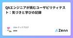
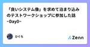
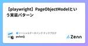

Zennの「QA」のフィード
フィード
テスト自動化未経験者がmablを使ってテスト自動化を始めてみた
Zennの「QA」のフィード
はじめに 私は2023年10月に株式会社ビットキーにテストエンジニアとして入社しました。 入社してから半年ほどスクラムチーム内でQAとしてテスト業務（テスト分析、テスト設計、テスト実装、テスト実行）を担当した後、2024年3月からリグレッションテストの自動化および自動化したテストの実行を中心としたテスト業務を行っています。 弊社のQAチームはテスト自動化ツールとしてmablを採用しています。 mablはローコードテスト自動化ツールとなっており、コーディングに関する経験や知識を備えていない場合でもテスト自動化をはじめることができるようになっています。 私自身もコーディングに関する経験や...
2時間前

アジャイルソフトウェアの12の原則から考える品質指標
Zennの「QA」のフィード
はじめに ソフトウェア開発を行っていくうえで、「品質」をどのように定義するかは組織によって様々かと思います。 私が所属する開発チームではアジャイルによるソフトウェア開発を行っていますが、毎スプリントごとに開発スタイルや仕事の取り組み方を改善し続けるアジャイル開発において、 大きな一つの指針になる「品質」をどのように定義するかは重要な課題の一つだと考えます。 そこで、本記事ではアジャイル開発における品質定義の指標について考えたいと思います。 具体的には、アジャイルソフトウェア開発宣言の12の基本原則をもとに、品質定義に向けた指標を洗い出していきます。 想定読者 アジャイル開発を採...
16時間前
MagicPodヘルススコアの全社統合分析用ダッシュボードを作成してみた 1
1
Zennの「QA」のフィード
! これは MIXI DEVELOPERS Advent Calendar 2024 の24日目の記事です。 背景 株式会社MIXI（以下、MIXI）は2021年8月にMagicPodを導入し、2024年12月現在3年と4ヶ月が経過しました。 今までMagicPodの運用は各事業部に任せっきりで、全社横断的に運用状況を把握することができませんでした。 インプロセスQAとして実務を行なっていた私ですが、2024年10月より横断的にMagicPodに関する支援を行うことになったので、まずは全社把握を行うことにしました。 自動テスト評価に関して、MagicPodでできること・できない...
1日前
登壇ドリブンという考え方 1
Zennの「QA」のフィード
はじめに ※この記事は「Medley（メドレー） Advent Calendar 2024」24 日目の記事です🎅🏻🎁 株式会社メドレーにて、QA エンジニアをやっている小島 (@Daishu) です！今回は職種によらない内容でブログを書いたので、ぜひ沢山の方にご覧頂けると嬉しいです🎄 今年の社外発信をふりかえる 突然ですが！2024 年に私が行った社外向けの発信について振り返ります！ 結果はこちらです↓ https://speakerdeck.com/medley/magicpod-meetup-health-score-night https://speakerdeck.co...
1日前
テストケースの形式性について
Zennの「QA」のフィード
テストケースの形式性 テストケースの特性である「テストケースの形式性」について記載します。 形式性という言葉はあんまり適した言葉がないのですが、しいていえば「formality」となると思います。 「この言葉を流行らしたいという」意図はありませんが、組織のテストケース改善を行う時に、この概念が必要な場合がありました。 そこで、本稿では「こういう見方もあるんだな」くらいに思ってもらえればいいと思っています。 多様なテストケース テストケースにはさまざまなフォーマットがあります。 典型的なものではISTQBのテストケースの定義があります。 「入力値」「事前条件」「期待結果」「アクショ...
2日前

QAエンジニアが挑むユーザビリティテスト：気づきと学びの記録
Zennの「QA」のフィード
こんにちは、QAエンジニアのEnnです。 Ubieでは職種にとらわれず、自分が挑戦したいことには積極的に取り組める文化があり、QA以外の業務にもチャレンジできる環境が整っています。 以前の職場でユーザーリサーチの研修講座に参加したことをきっかけに、この分野に興味を持ち続けてきました。Ubieでは、各チームがユーザーのインサイトを把握するために、定期的にユーザーインタビューとユーザービリティテストを実施しています。今回、モデレーター[1]として所属しているチームで合計4回のユーザビリティテストを実施しました。この記事では完全に素人である私が、そこから得た経験をシェアしたいと思います。 ...
2日前
スタートアップ企業でQAチームを立ち上げて半年間やってきたこと
Zennの「QA」のフィード
! ※この記事は「COUNTERWORKS Advent Calendar」の23日目の記事です。 はじめに こんにちは！今回のアドベントカレンダー4記事目となるshimです。今回のアドベントカレンダーの言い出しっぺなので頑張ってます。 あらためて自己紹介なのですが、株式会社COUNTER WORKS（カウンターワークス）エンタープライズ事業部の開発チームにて、テックリード的存在として、リーシングのDXを実現するクラウド管理システム「ショップカウンター エンタープライズ」を開発しております。 今回は、弊社の弊事業部内に新たにQAチームを立ち上げ、半年間に行ったことを振り返ります。 ...
2日前

「良いシステム像」を求めて泊まり込みのテストワークショップに参加した話 ~Day0~
Zennの「QA」のフィード
! ボリュームが大きくなりそうなので、この記事ではまだワークショップには参加しません。 次回以降でやっと参加する運びになりそうです。 自己紹介とお悩み 初投稿です。ひぐちと言います。社会人6年目になります。 社外技術やトレンド調査を行いつつ、昨年から社内システムの開発運用にアサインされています。 無我夢中でなんとか社内にシステムをリリースして一年。 自分なりに「より良いシステム」を目指してプロジェクト推進を行なってきました。 ただ、日々の業務に追われながら、頭の隅には常に 「高品質なシステムってなんだ？」 「どうなったら高品質と言えるんだ？」 というモヤモヤがありました。 「W...
4日前

品質保証における原則をソフトウェア開発に当てはめて考えてみる
Zennの「QA」のフィード
はじめに 本記事は「新版品質保証ガイドブック」に記載のある、「品質保証に関わる原則」について、ソフトウェア開発の文脈でどのように関わりがあるかを検討するものです。 私自身はQAエンジニアではありますが、JIS認証に関わっているわけでもなければ、大学で学んだりしたわけでもない市井のQAです。 ですので、読者の方は決して鵜呑みにしないでいただきたいと思っています。 原著を読んだり、専門家の先生に習っていただき、きちんと学習していただきたいと思っています。 そもそもの品質保証の位置付け 品質保証やTQMについて、一言で表すことを避けている文献は多い印象です。 それは品質や、品質保証の概...
6日前

Notionとspreadsheetを活用したテスト設計
Zennの「QA」のフィード
はじめに こちらはe-dash advent calendar 2024の19日目の記事です。 2024年10月、e-dashのQAグループに参画しましたQAエンジニアのuedaです。e-dashのQAグループは2024年5月に新設されたばかりのため、現在もQAプロセスの構築を進めています。 e-dashではアジャイル開発のフレームワークとしてスクラムを採用しており、2週間のスプリントの中で、開発タスクに対するテストを行いながら、品質管理の仕組みづくりにも並行して取り組んでいます。 この記事では、入社してからQAグループとして行った私の活動についてお伝えしたいと思います。 テスト...
6日前

QAチームミッションのアップデート 〜進める上での工夫と学び〜 1
Zennの「QA」のフィード
こんにちは！atama plusでQA Engineering Managerをしている池上です。 atama plus Advent Calendar 2024の12月18日の記事になります！ ミッションの策定のような抽象的なテーマを扱う際、どうやって全員を巻き込み、共通認識を形成するか悩んだことがある方もいらっしゃるのではないかと思います。 本ブログでは、QAチームがミッションをアップデートするプロジェクトで実際に取り組んだプロセスと工夫を紹介します。 Engineering Managerなどチームミッション/ビジョンなどを検討する方の参考になれば幸いです。 背景：ミッションア...
7日前

チーム内で経験を積み「縁の下の力持ち」ポジションの私がチームでどう立ち回っているか
Zennの「QA」のフィード
はじめに 株式会社ビットキー Software QAアドベントカレンダーの2024年12月18日の記事は、2023年1月に入社しましたSoftware QAチーム所属 na-na が担当します。 今回は、チーム内でそれなりに経験を積み「縁の下の力持ち」ポジションとなった私が普段の業務においてどのように行動をしているか、何を心がけているかをお伝えします！ 所属チームの現状 現在のビットキーにはworkhub事業本部、homehub事業本部があります。 入社時の私は、現在のhomehub事業本部にあたる部門のAppチームに配属されました。 4ヶ月ほどAppチームで修行を行った後、現在...
7日前

プロダクトとは作るのではないと、開発エンジニアが泊まり込みのソフトウェアテストワークショップで学んだこと
Zennの「QA」のフィード
! この記事は「株式会社ログラス Productチーム Advent Calendar 2024」シリーズ2、20日目の記事です🎅🎄 はじめに ちょっとだけ僕の経歴をお話させてください。 現在ソフトウェアエンジニア3年目の福土です。 前職では受託✖️オフショア開発をしており、発注元の会社のPMやテックリードの方が決めた要件をもとにフィリピンのエンジニアと開発を行っておりました。 その時 自分の作ったプロダクトが誰に使われているのか？ どんな価値が提供できているのか？ どれくらい会社への利益貢献ができているのか？ が見えずこのまま見えないコスト構造とお客様の顔と向き合いながらエ...
7日前

WACATE 2024 冬 招待講演の内容を咀嚼する
Zennの「QA」のフィード
鈴木さんの発表、当日のお話だけでは消化しきれず（というか飲み込むところでつまづいている）、咀嚼の時間を確保しました。 ちなみに、消化しきれないのは私のベース知識が乏しいからなのと、処理速度の問題なので、構成がどうとかそういう意図は全くありません。 とりあえず、発表スライドを改めて読み直そうと思います。 そして、思ったことを書き留めていき、その過程で飲み込めるものは飲み込んでいけるといいなと思っています。 https://speakerdeck.com/kzsuzuki/20241214-wacatedong-tesutoshe-ji-ji-fa-wotiyotutofu-kan-site...
8日前

React Native アプリのテスト経験を通じて得た知見 1
Zennの「QA」のフィード
こんにちは、QAエンジニアのEnnです。 今年に入ってからReact Nativeで開発したアプリのテストに携わる機会がいくつかありましたが、10月から本格的にアジャイル開発でReact NativeアプリのQAを担当することになりました。チームのスプリントは2.5日で回しており、基本的には1スプリント内で開発からQAまで完結し、長くても2スプリントで開発からQAを完了するようにしています。何回かリリースサイクルを経験する中で、これまでのモバイルアプリのQA経験とは異なる点を感じることがありました。 今所属しているチームで新しい機能については手動テストで対応し、リリース後にはMagicP...
9日前

e-dash QAってどんな感じ？2024の振り返り
Zennの「QA」のフィード
はじめに こちらはe-dash advent calendar 2024の16日目の記事です。 こんにちは！e-dashでQAエンジニアをしている10mo8です。 この記事では、e-dash QAグループを0から作り上げた2024年を振り返り、今日までの取り組みをご紹介したいと思います。 e-dash QAって？ e-dashのQAグループは、2024年5月に1人目、10月に2人目がジョインし、現在は2名体制で横断的に複数の機能開発チームの一員として、Dev、Designer、PMと連携しながら、品質向上に取り組んでいます。 QAグループのコンピテンシーは？ e-dashのQ...
9日前

bug bashの型化と工夫 1
Zennの「QA」のフィード
こんにちは！atama plusでQAをしている吉原です。 「atama plus Advent Calendar 2024」12月16日の記事になります。 はじめに atama plusでは、大きな新機能開発がある度にQA主導でbug bash(バグバッシュ)というイベントを開催してきました。回数を重ねるごとに知見が溜まり、遂には型化され、結果誰でも開催できる仕組みになってきました！今回そんな型化されたbug bashについて紹介したいと思います。この記事は、bug bashに興味がある方や、これから開催を考えている方の参考になれば幸いです。 bug bashとは bug ba...
9日前
ビジュアルリグレッションテスト導入での学び 1
Zennの「QA」のフィード
はじめに こんにちは、atama plusでQAをしているAchanです。 atama plus Advent Calendar 2024の12月12日の記事です。 昨年弊社QA @ikegagagamiが紹介しました「開発プロセスでPlaywrightを活用して自動化を進めている話」でチャレンジ中でしたビジュアルリグレッションテストでの失敗や成果などをご紹介出来ればと思います。 Playwrightでビジュアルリグレッションテストを導入してみたいといった方の参考になれば幸いです。 本記事では以下の構成でご紹介していきます！ ビジュアルリグレッションテスト導入の経緯 検出すべき不具...
13日前

【playwright】PageObjectModelという実装パターン
Zennの「QA」のフィード
Social Databank Advent Calendar 2024 の 11 日目です。 前回の記事 https://zenn.dev/sdb_blog/articles/test-blog-kyoya-004 🙃はじめに ! playwrightのPageObjectModelについて考える 皆さんおはこんばんにちは！（死語 充実したplaywright人生歩んでいますか！？ 今回はplaywrightの実装パターンであるPageObjectModel についてお話ししていこうと思います！ 🗒️Page Object Modelって？ 皆さんはPageObjectMod...
13日前

テスト実行者というロールについて語ろう
Zennの「QA」のフィード
はじめに 本記事はテスト実行フェーズを主に担っている「テスト実行者」というロールに焦点を当て、その技術的な専門性について記載します。 また、「テスト実行者」は専門性の高さにかかわらず、低単価で扱われることが多いです。 その点についても考察します。 本記事の趣旨は「テスト実行者はそれはそれで高いスキルが必要なんだよ」ということを記載する記事です。 また、「低単価で扱われること」に理由付けすることが目的ではありません。 そのため、最後に「テスト実行者というロールが低単価を脱するには」についても考察します。 テスト実行とテスト実行者 テスト実行とは 本記事おけるテスト実行とは、以下...
14日前